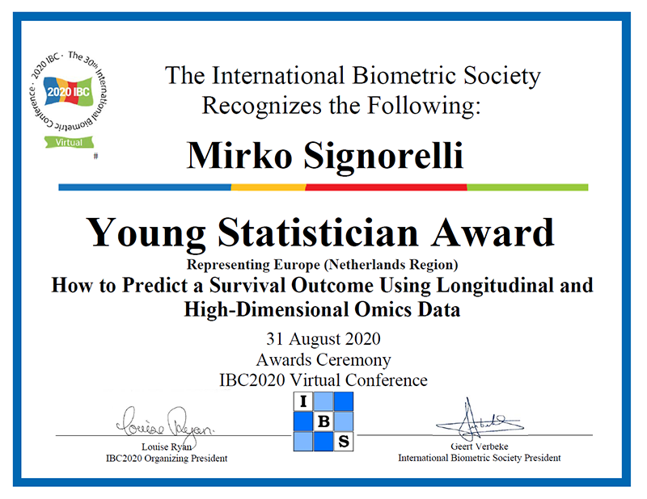
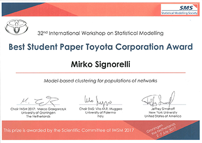

Awards
Young Statistician Award (International Biometric Society)

In August 2020 I received the Young Statistician Award of the International Biometric Society (IBS).
This award was based on a world-wide competition whereby young statisticians could submit a short paper with a contribution to be presented at the 30th International Biometric Conference (IBC2020). Five winners, one for each macroregion of IBS, were selected. My short paper, entitled “How to predict a survival outcome using longitudinal and high-dimensional omics data”, was the winner for Europe. Its contents were presented during the Young Statistician Showcase session of IBC2020.
Best PhD Thesis Award (Italian Statistical Society)

In June 2018 I received the Best PhD Thesis Award of the Italian Statistical Society.
This award is awarded every other year to PhD theses belonging to one of the following categories: methological statistics, applied statistics and demography. My PhD thesis, entitled “Inferring Community-driven Structure in Complex Networks”, was selected for the award in the applied statistics category.
After I received the award, I was interviewed by the Italian newspaper Corriere della Sera; you can read the interview (in Italian) here.
Best Student Paper Award (Statistical Modelling Society)

In July 2017 I received the Best Student Paper Toyota Corporation Award of the Statistical Modelling Society.
This award was based on a competition between all short papers submitted by PhD students for a contributed talk at the 32nd International Workshop on Statistical Modelling (IWSM).
Research Award 2016 (Dept. of Statistics, University of Padova)
In 2017 I received the Research Award 2016 of the Department of Statistical Sciences of the University of Padova.
This award is based on a competition whereby all junior researchers affiliated to the Department of Statistical Sciences can submit one of their published articles for consideration. I received the award based on my article NEAT: an efficient network enrichment analysis test that is published in BMC Bioinformatics.